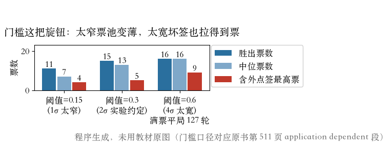
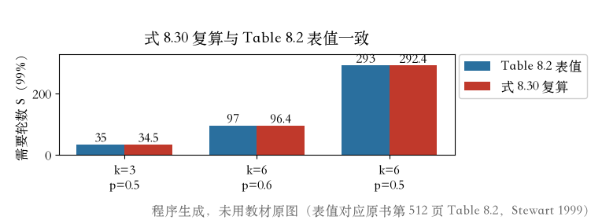
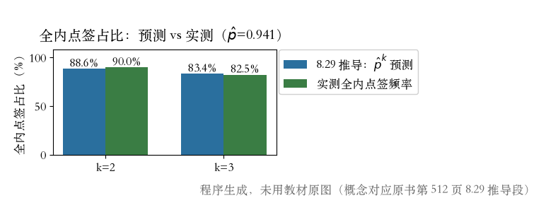

第 8 章 · RANSAC 实战 · 两笔账
门槛画在哪，轮数算多少
- 账一：门槛 0.3 不是原书规定，是二倍噪声的实验约定。
- 账二：200 轮够不够，要用内点率和签大小算。
- 本集顺序：阈值 → 变体 → 轮数公式。
依据：原书第 511–512 页
两笔账
门槛：允许的误差带宽
轮数：达到把握要抽多少次
变体：知道各自属于哪一类
作业一兑现 · 门槛三档
门槛一变，票池就变
- 0.15：胜出 11 票，中位 7 票，票池变薄。
- 0.3：胜出 15 票，中位 13 票，与上一集一致。
- 0.6：含外点签最高 9 票，127 轮打平。
- 窄了错杀好点，宽了坏签也能拿票。
依据：原书第 511 页 + 本集实验

门槛三档：窄了票池变薄，宽了坏签也能拿到票｜程序生成，未用教材原图
MAD 定门槛 · 承前两集
用残差中位数估噪声
- 先算全体残差，再取 MAD。
- 噪声宽度 = 1.4 × MAD；门槛取两倍噪声宽度。
- 全集 OLS 版 0.55，偏宽；胜出线版 0.22，更贴近 0.3。
- 外点会先把拟合线拉偏，门槛也会跟着偏宽。
依据：原书第 947 页 MAD + 本集实验
三步
1. 当前拟合算残差
2. 取残差 MAD
3. 门槛 = 2 × 1.4 × MAD
变体族谱 · 轮数公式
先认家族，再算轮数
- 图快：Preemptive RANSAC、PROSAC。
- 为训练/鲁棒：MLESAC、DSAC、Graph-Cut、MAGSAC、ESAC。
- GNC 是另一条路，有研究说不少几何任务能胜过 RANSAC。
- 一轮全中概率 p^k；S 轮失败概率 (1−p^k)^S。
依据：原书第 511–512 页
1 − P = (1 − pk)S
p：一个点有效的概率；k：每签点数；S：轮数
式 8.30 · Table 8.2
三十五、九十七、二百九十三
- S = log(1−P) / log(1−p^k)。
- 表值：k=3,p=0.5→35；k=6,p=0.6→97；k=6,p=0.5→293。
- 复算：34.5→35；96.4→97；292.4→293。
- 签从 3 点换 6 点，轮数涨约 8.4 倍。
依据：原书第 512 页 Table 8.2

式 8.30 复算与 Table 8.2 表值逐行一致｜程序生成，未用教材原图
作业二兑现 · p 的幂
签多一个点，全中机会就下降
- 两点签：180/200 全内点，p² 预测 88.6%，实测 90.0%。
- 三点签：165/200，p³ 预测 83.4%，实测 82.5%。
- 偏差 1.6 和不到 1 个百分点，公式对得上。
- 外点答案只在事后统计时翻开，不掺进抽签。
依据：原书第 512 页 + 本集实验

全内点签频率：p 的幂预测 vs 实测｜程序生成，未用教材原图
轮数应用 · 作业
内点率和签大小，两头定轮数
- 17 点里 16 个内点，两点签 99% 把握只要 3 轮。
- 跑 200 轮，余量 60 多倍；余量是数据不干净时的保险。
- 内点率降到 0.5：3→17 轮；签 2→6 点：17→293 轮。
- 作业：估自己的 p，算 99% 轮数并实测；95% 把握呢？
依据：原书第 512 页 + 本集实验
本集读数
p 的估计 = 15/17 ≈ 0.94
S(99%, k=2) = 3 轮
难场景：17 / 293 轮
收束 · 下一集
两笔账算完，下一集量不确定度
- 门槛依应用而定，通常 1–3 像素；宽窄后果不同。
- 轮数：p^k 账，式 8.30 可算，表值逐行复算过。
- 变体：图快、为训练、另一条路；MAD 定门槛接上前两集。
- 下一集：换批数据重跑，答案会晃多厉害。
依据：原书第 512 页起
下一集
参数不确定度
原书指向附录 B.6
换批数据，答案晃多少